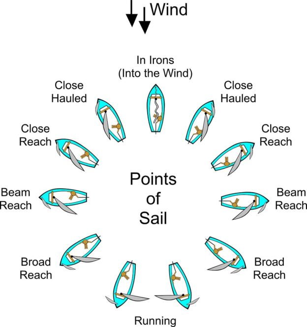

Module 2
Wind and Points of Sail
Every sailor must understand the direction of the wind and the different angles at which a sailboat can travel. These angles are called the Points of Sail.
Learning Objectives
After completing this lesson, you should be able to:
- Determine the direction of the wind.
- Identify every Point of Sail.
- Understand why a sailboat cannot sail directly into the wind.
- Know which Points of Sail are generally fastest and slowest.
The Wind
Everything in sailing begins with the wind. Before setting sail, always determine the wind direction. Sailors often use flags, ripples on the water, tree movement, or a wind vane to estimate the wind.
Wind direction is always described as the direction from which the wind is blowing. For example, a north wind blows from the north toward the south.

The No-Go Zone
A sailboat cannot sail directly into the wind because the sails cannot generate enough lift in that direction.
The area approximately 45 degrees on either side of the wind is known as the No-Go Zone. If the boat enters this zone, the sails will begin to flap, or luff, and the boat will slow dramatically.
The Five Points of Sail
| Point of Sail | Description |
|---|---|
| Close Hauled | Sailing as close to the wind as possible. |
| Close Reach | The wind comes from forward of the beam. |
| Beam Reach | The wind comes directly from the side. |
| Broad Reach | The wind comes from behind the beam. |
| Running | The wind comes almost directly from behind. |
Important
A sailboat can sail in almost every direction except directly into the wind.
Which Point of Sail Is Fastest?
Although every boat is different, most dinghies achieve their highest speed on a Beam Reach or a Broad Reach. Sailing directly downwind is often slower than many beginners expect.
Sailing Upwind
Since a sailboat cannot sail directly into the wind, sailors travel upwind by sailing a zigzag course called tacking. This technique allows the boat to gradually make progress toward an upwind destination.
Did You Know?
Modern racing dinghies can often sail at an angle of about 45 degrees to the true wind, allowing them to travel efficiently upwind.
Key Takeaways
- Wind direction determines every sailing decision.
- A sailboat cannot sail directly into the wind.
- The No-Go Zone is where the sails lose power and begin to luff.
- The five Points of Sail describe the boat's angle relative to the wind.
- To sail upwind, a sailor must tack from side to side.